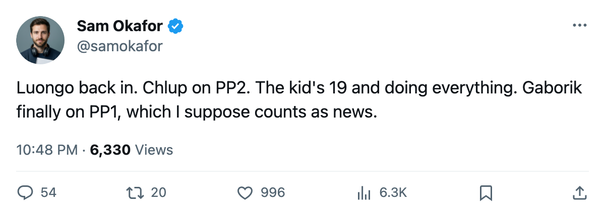

Leafs Practice Notes: Luongo back between the pipes, Chlup joins the second power-play unit
The lineup shuffle opens the season's first division date in Montreal on Thursday.
 Sam OkaforLeafs beat reporter · Queen City Telegram
Sam OkaforLeafs beat reporter · Queen City Telegram
 Roberto Luongo95 is back in the crease after sitting out two straight. The Conn Smythe winner dressed as G1 against
Roberto Luongo95 is back in the crease after sitting out two straight. The Conn Smythe winner dressed as G1 against  Phoenix Coyotes on Friday and stopped the shots he faced in a 6-4 win. Maxime Ouellet86 scratched after starting the previous two nights.
Phoenix Coyotes on Friday and stopped the shots he faced in a 6-4 win. Maxime Ouellet86 scratched after starting the previous two nights.
The lineup moved more than just goaltender. Petr Chlup87, the 19-year-old centre with 6 points in 5 games, added a second power-play unit spot alongside his existing even-strength assignment on the third line. He now skates 31C_ on the penalty kill and P2C_ on PP2, a load no other leaf under 20 has carried this season.
 Marian Gaborik99 moved onto the top power-play unit, slotting as P1RW alongside
Marian Gaborik99 moved onto the top power-play unit, slotting as P1RW alongside  Mats Sundin92 and
Mats Sundin92 and  Brad Richards87. Gaborik sits at +11 on the Bureau's Development Index, the second-highest form reading in the league, though the point total reads just 1 in 4 games.
Brad Richards87. Gaborik sits at +11 on the Bureau's Development Index, the second-highest form reading in the league, though the point total reads just 1 in 4 games.
 Gary Roberts85 came off PP2. He had carried P2LW alongside Richards before the reshuffle; now he occupies a left-wing spot on line 3 and nothing on special teams.
Gary Roberts85 came off PP2. He had carried P2LW alongside Richards before the reshuffle; now he occupies a left-wing spot on line 3 and nothing on special teams.
The first division meeting
 Toronto Maple Leafs opens its Northeast schedule Thursday on the road against
Toronto Maple Leafs opens its Northeast schedule Thursday on the road against  Montreal Canadiens, the season's first meeting between the clubs. Montreal sits at 1-1-1, 3 points, 5th in the division. Toronto leads at 8.
Montreal Canadiens, the season's first meeting between the clubs. Montreal sits at 1-1-1, 3 points, 5th in the division. Toronto leads at 8.
The Maple Leafs have faced two of their four division rivals. They beat  Ottawa Senators 4-1 on opening night and have not met
Ottawa Senators 4-1 on opening night and have not met  Buffalo Sabres or
Buffalo Sabres or  Boston Bruins yet. The next three days pack in both: Boston comes to Toronto on Saturday.
Boston Bruins yet. The next three days pack in both: Boston comes to Toronto on Saturday.
 Rostislav Klesla87 and
Rostislav Klesla87 and  Barret Jackman86 continue to log heavy minutes. Klesla at 27.0 a night, Jackman at 28.4, the two highest totals on the roster.
Barret Jackman86 continue to log heavy minutes. Klesla at 27.0 a night, Jackman at 28.4, the two highest totals on the roster.  Jiri Fischer84 skates 19.0 and
Jiri Fischer84 skates 19.0 and  Tomas Kaberle85 has come down from four units to three, losing a power-play spot.
Tomas Kaberle85 has come down from four units to three, losing a power-play spot.
Who is out
Toronto has no injured players.  Bryan McCabe82, Steve Eminger82, and
Bryan McCabe82, Steve Eminger82, and  Ron Hainsey77 dress as healthy scratches. The six who play up front have produced 21 goals in 5 games.
Ron Hainsey77 dress as healthy scratches. The six who play up front have produced 21 goals in 5 games.
Next five:
| Date | Opponent | Location |
|---|---|---|
| 10-19 | MTL | Away |
| 10-21 | BOS | Home |
| 10-23 | FLA | Home |
| 10-26 | NYR | Home |
| 10-28 | ANA | Home |
